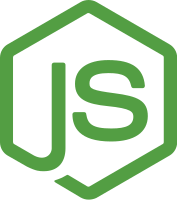
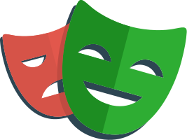
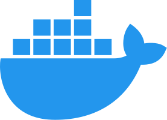
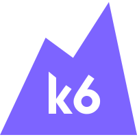
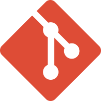
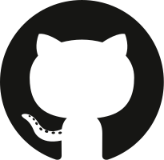

A small idea.
A small idea.
Signals & Sandbox
Prompt Engineering with the CARE Framework
How I use Context, Action, Result, and Example to turn a vague AI request into a specific, useful prompt.
Notes from the workbench
One space for what I notice, what I try, and what I learn along the way.
Tools I use and explore






Keep a reading list on this device.
How I use Context, Action, Result, and Example to turn a vague AI request into a specific, useful prompt.
Choose another topic to explore the posts.